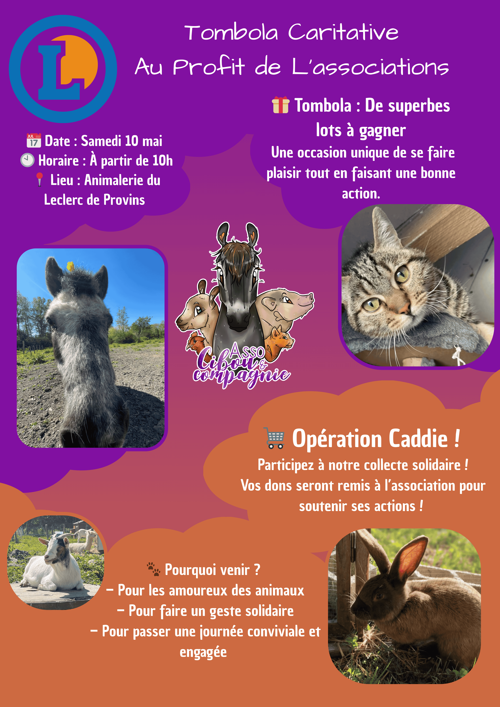

L'association Cibou et Compagnie accueille et place à l'adoption des animaux en détresse. Malgré un travail remarquable sur le terrain, leur présence numérique manquait de régularité et de cohérence éditoriale — limitant leur visibilité et leur capacité à toucher de futurs adoptants.
La problématique principale : comment construire une ligne éditoriale Instagram à la fois informative, engageante et fidèle à l'identité de l'association, avec des ressources limitées ?
J'ai débuté par un audit du compte existant : analyse des publications passées, identification des formats qui généraient le plus d'engagement, et cartographie de la communauté d'abonnés. Cette phase de diagnostic a permis d'orienter les choix éditoriaux avec des données concrètes.
J'ai ensuite défini un calendrier éditorial structuré autour de trois types de contenus : les portraits d'animaux à l'adoption, les stories pédagogiques sur les comportements et besoins des animaux, et les actualités de l'association. Chaque publication était conçue pour être autonome tout en participant à une narration d'ensemble.
Ce stage m'a permis de mettre en pratique pour la première fois l'ensemble du cycle de création de contenu : stratégie, production, publication et analyse. Travailler pour une association m'a imposé des contraintes créatives stimulantes — faire beaucoup avec peu, et rester authentique à chaque publication.
J'ai développé une vraie sensibilité pour la narration visuelle et l'importance de la cohérence de ton dans une communication de marque — même associative. Un apprentissage fondamental pour la suite de mon parcours.
// Visuels du projet
